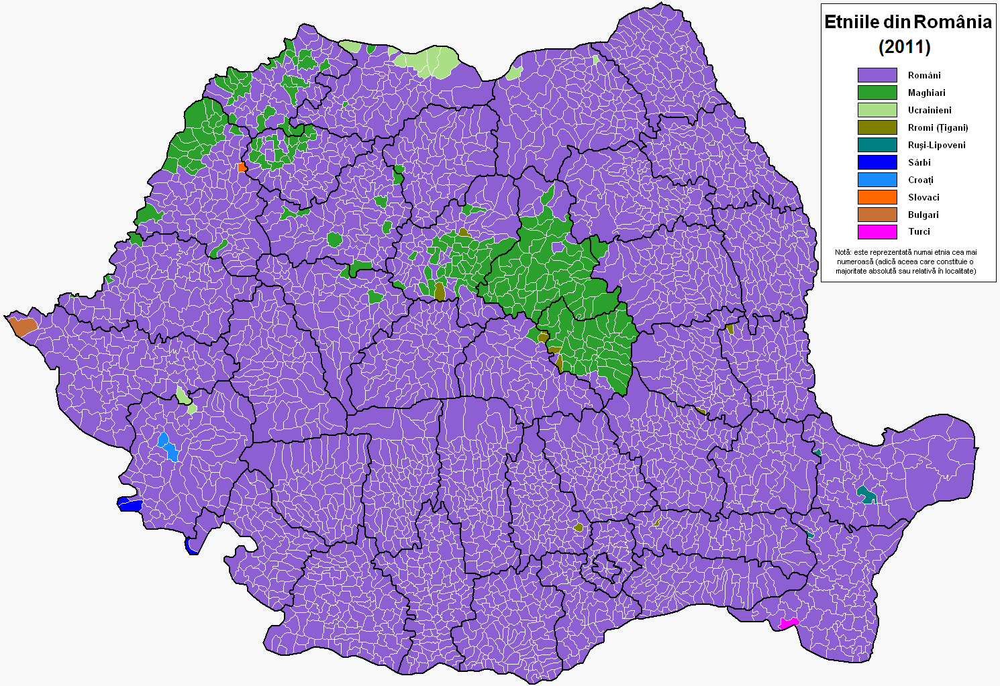

Се́кеи или Секуи или Секлеры (ед. ч. «секей» от венгерск. этнонима Székely ([ˈseːkɛj]) также Szekler букв. люди; также рум. Secui, нем. Szekler, лат. Siculi) — одна из субэтнических групп, составляющих венгерское национальное меньшинство на территории современной республики Румыния. Представители другой венгерской общины в Румынии — чангоши, проживающие в румынской провинции Молдова, малочисленны и менее известны за пределами страны.
На протяжении долгого времени секеи в силу долго сохранявшегося особого статуса в большинстве исторических документов рассматривались отдельно от венгров, несмотря на то что они всегда были носителями венгерского языка и культуры и опорой венгерского правления в Трансильвании.
Перейти к карте расселения секеев
История
Со времён средневековья секеи известны как отважные воины, игравшие важную роль в венгерской армии. Этногенез секеев, как и самих венгров, ещё недостаточно изучен. Существуют гипотезы об их печенежском[1] и даже гуннском (а также аварском, булгарском, кабарском, готском или гепидском) происхождении. Из источников известно, что, в отличие от мадьяр, сравнительно рано перешедших от кочевого скотоводства к оседлому образу жизни и земледелию, секеи кочевали по Паннонии еще в XII—XIII веках.
Большинство венгерских учёных считает племя секеев потомками авар[2][3]. Согласно Н. Эрдели, секеи — потомки авар, вторгшихся в долину Дуная в VI в.[4]
Секеями были многие выдающиеся деятели венгерской истории, например, предводитель крестьянского восстания 1514 года Дьёрдь Дожа, король Речи Посполитой Стефан Баторий (Иштван Батори), а также правители Трансильвании и руководители антигабсбургских восстаний Иштван Бочкаи и Ференц II Ракоци. Секлеры приняли активное участие в Венгерской войне 1849 года, воюя на стороне республиканского правительства Кошута.
В Венгерском королевстве секеи выплачивали налог быками. Налог был введён королём Уласло II в 1499 году именно для секеев, имевших в королевстве особый статус. Согласно королевской грамоте, секеи освобождались от всех прочих налогов, но были обязаны вносить в казну один сбор — налог быками. При этом налог взимался только в особенных случаях: рождение наследника престола, коронация и т. д.[5]
Будучи носителями венгерского языка, сами секеи в настоящее время относят себя к венграм. В составе так называемого Союза трёх наций они выступали как главные предводители Трансильвании, где они — протестанты и католики — полностью подчинили своей власти православное румынское большинство, вставшее в XVIII—XX веках на путь сопротивления мадьяризации.
С 1920-х годов ареал проживания секеев и чангошей полностью окружён территорией сплошного расселения румынского народа, оказывающего на него мощное ассимилятивное давление. Большинство современных секеев как минимум двуязычны и владеют также румынским языком.
Пример секеев в литературе
В Трансильвании живут четыре различные народности: на юге саксонцы вперемешку с валахами, народом, происходящим от даков; на западе венгры и секеи на востоке и севере. Последние, к ним и лежит мой путь, утверждают, что ведут свой род от Аттилы и гуннов. Возможно, так оно и есть, ибо в XI веке, когда венгры завоевали страну, она была сплошь заселена гуннами. Я где-то вычитал, что Карпаты, словно подкова магнита, притягивают к себе все мыслимые в мире суеверия, они как будто в центре странного водоворота фантазии; если так, то мое пребывание здесь обещает быть чрезвычайно интересным. (Прим.: надо расспросить обо всем графа.)
Я плохо спал, хотя постель была довольно удобной; мне снились какие-то странные сны. Ночь напролет под окном завывала собака, что, может быть, и повлияло на эти сны, а может быть, виновата паприка, так как, хотя я выпил всю воду в графине, я не смог утолить жажду. Под утро я, кажется, крепко заснул, ведь, чтобы меня добудиться, пришлось с полчаса неистово колотить в дверь. К завтраку подали опять паприку, затем особую кашу из кукурузной муки, ее называют здесь мамалыга, и баклажаны, начиненные мясным фаршем, – превосходное блюдо; называется оно имплетата. (Прим.: надо раздобыть и этот рецепт.) Мне пришлось поторопиться с завтраком, поезд отходил без нескольких минут восемь; вернее, должен был отойти, потому что, примчавшись на станцию в 7.30, я больше часа просидел в вагоне, прежде чем мы тронулись с места. Мне кажется, чем дальше на восток, тем менее точны поезда. Что же творится тогда в Китае?
Весь день мы, как бы нехотя, тащились по местности, изобилующей разнообразными красотами. Нашему взору представали то маленькие городки или замки на вершинах крутых холмов, подобные тем, что встречаются в старинных молитвенниках; то речные потоки, грозящие наводнением, если судить по широким каменистым закраинам по обеим их сторонам. Половодье должно быть бурным, чтобы начисто сметать все с берегов. На каждой станции толпилось множество людей в разнообразных нарядах. Некоторые напомнили мне крестьян моей собственной страны или тех, что я видел, проезжая через Францию и Германию, в коротких куртках, круглых шляпах и домотканых штанах; другие были очень живописны. Женщины представлялись красивыми только издали, вблизи у всех оказывались нескладные фигуры. На них одежда с белыми пышными рукавами разных фасонов, и многие подпоясаны широкими поясами со свисающими кусками ткани, которые колышутся вокруг тела, подобно балетным платьям, но под этим, конечно, были нижние юбки. Наиболее странное зрелище из-за своего самого варварского из всех вида представляли словаки, в их огромных пастушеских шляпах, широких бесформенных штанах грязно-белого цвета, белых холщовых рубахах и непомерно тяжелых кожаных поясах почти в фут шириной, густо усаженных медными гвоздями. Обуты они в высокие сапоги, куда заправляются и штаны; у них длинные черные волосы и густые черные усы. Они очень живописны, но нельзя сказать, чтобы очень располагали к себе. Выпусти их на сцену, их бы тут же приняли за матерых восточных разбойников. Однако мне говорили – они совершенно безобидны и скорее от природы лишены уверенности в себе.
Уже ближе к ночи мы добрались наконец до Бистрицы, оказавшейся очень интересным старинным уголком. Находясь практически на границе – через ущелье Борго отсюда попадаешь прямо в Буковину, – он пережил немало бурных событий, оставивших о себе заметную память. Около пятидесяти лет назад разразившиеся один за другим грандиозные пожары пятикратно производили ужасное опустошение. В самом начале семнадцатого века город выдержал трехнедельную осаду, потеряв 13 000 человек, унесенных, вместе с павшими на поле брани, голодом и болезнями.
Граф Дракула в своих письмах рекомендовал мне гостиницу «Золотая Крона», которая, к моему восторгу, оказалась выдержанной в старинном стиле, ибо я, конечно же, хотел как можно лучше постигнуть эту страну. По-видимому, моего приезда здесь ожидали: в дверях меня встретила бодрая на вид пожилая женщина в обычном крестьянском костюме – белой рубахе и длинном цветном фартуке из двух полотен, впереди и сзади, едва ли не чересчур облегающем, если говорить о приличиях. Когда я подошел, она, поклонившись, спросила: «Господин – англичанин?» – «Да, – ответил я. – Джонатан Гаркер». Она улыбнулась и что-то сказала человеку в белой рубахе, вслед за ней вышедшему к дверям. Удалившись, он тотчас вернулся с письмом:
«МОЙ ДРУГ, добро пожаловать в Карпаты! С нетерпением жду вас. Эту ночь спите спокойно. Завтра в три часа дилижанс отправится в Буковину; одно место предназначается вам. В ущелье Борго будет ожидать коляска, которая и доставит вас в замок. Надеюсь, вы благополучно добрались из Лондона и вам доставит удовольствие пребывание в моей прекрасной стране.
Ваш друг ДРАКУЛА».
4 МАЯ. Я узнал, что хозяин гостиницы получил от графа письмо с распоряжением оставить для меня лучшее место в экипаже, но на более подробные расспросы он как будто отмалчивался, притворяясь, что не понимает моего немецкого языка. Это выглядело неправдоподобным, потому что до сих пор он прекрасно его понимал – во всяком случае, отвечал именно так, как нужно. Переглядываясь как-то испуганно со своей женой, пожилой особой, встречавшей меня, он наконец промямлил, что деньги были посланы в письме и что больше ему ничего не известно. Когда я спросил, знает ли он графа Дракулу и не может ли что-нибудь рассказать о замке, они с женой перекрестились и, сказав, что они ровным счетом ничего не знают, просто-напросто отказались от дальнейших разговоров. До отъезда оставалось так мало времени, что расспросить никого другого я не успел; все это было так таинственно и ни в малой степени не успокаивало.
Перед самым отъездом ко мне поднялась старая хозяйка и заговорила почти в истерике: «Вам нужно ехать? Ах! Молодой господин, вам обязательно надо ехать?» Она была так взволнована, что, по-видимому, растеряла и тот малый запас немецких слов, которым владела, и потому примешивала к немецкому языку какой-то другой, мне совершенно незнакомый. Я едва был способен улавливать смысл и постоянно переспрашивал. Когда я сказал, что должен ехать сейчас же, что меня призывает туда важное дело, она снова спросила: «Да известно вам, какой сегодня день?» Я ответил, что сегодня 4 мая; она покачала головой, говоря: «Я-то знаю, знаю! А вы-то знаете, что за день сегодня?» Видя, что я понятия не имею, о чем речь, она продолжала: «Сегодня канун святого Георгия, нынче ночью, едва лишь пробьет двенадцать, вся нечисть, какая только есть на земле, войдет в полную силу. Да знаете ли вы, куда едете и что вас там ожидает?» Отчаяние ее было настолько явным, что я попытался ее утешить, но безуспешно. Под конец она упала передо мной на колени и умоляла меня не ездить; по крайней мере, обождать день или два. Все это было весьма забавно, однако мне сделалось не по себе. Тем не менее меня призывали дела, и я не потерпел бы никакого вмешательства. Поэтому я ее поднял с колен и как можно строже сказал, что благодарю за предупреждение, но обязанности призывают меня и я должен ехать. Тогда она встала, утерла глаза и, сняв со своей шеи крест, протянула мне. Я не знал, как поступить; принадлежа к англиканской церкви, я с детства привык смотреть на такие вещи как на своего рода идолопоклонство, но отказать старой даме, которая столь явно желала мне добра, да еще пребывающей в таком душевном состоянии, было бы слишком неблагодарно. Думаю, она по выражению моего лица распознала мою нерешительность, так как просто надела мне крест на шею, прибавив: «Во имя вашей матери», и вышла из комнаты. Вношу это в дневник, дожидаясь кареты, которая, конечно, запаздывает; а крест так и остался на мне. Из-за страхов ли старой дамы или из-за многочисленных здешних преданий о призраках, а может, из-за самого креста – не знаю, только на душе у меня далеко не так спокойно, как прежде. Если этим запискам суждено увидеть Мину раньше меня, пусть они передадут ей мой привет. Вот и карета едет.
5 МАЯ. В ЗАМКЕ. Предрассветная мгла рассеялась, солнце стоит в вышине над далеким горизонтом, линия которого кажется изломанной; не знаю, деревья или холмы придают ей такой вид – все так далеко, что большое неотличимо от малого. Мне не хочется спать, и поскольку меня не должны будить, пока я сам не проснусь, то стану писать, покуда не сморит сон. Предстоит рассказать о многих странных вещах, но, дабы не вообразили читающие, что я слишком плотно пообедал перед отъездом из Бистрицы, я подробно опишу свой обед. Мне подали блюдо, которое здесь называется «разбойничье жаркое»: это куски бекона, говядины и лук, приправленные красным перцем, – все нанизывается на палочки и жарится прямо на углях, так же как в Лондоне мясные обрезки. Вино подали «Золотистый медок», странно щиплющее язык, но в общем приятное на вкус; я выпил всего пару бокалов этого напитка, и больше ничего.
Карта расселения секеев

Персонаж-секей - Дракула
Фильмы про Дракулу
-
Дом Дракулы
-
Дочь Дракулы
-
Дракула — отец и сын
-
Шрамы Дракулы
-
Невеста Дракулы
-
Дракула: История любви
-
Дракула против Франкенштейна (фильм, 1972)
-
Эбботт и Костелло встречают Франкенштейна
Жанры указанных фильмов
-
Ужасы
-
Хоррор
-
Готическое кино
-
Старая школа готического кино
-
Новая школа готического кино
-
Фантастика
Авторизация на сайте
Вход
Регистрация
Вернуться в начало